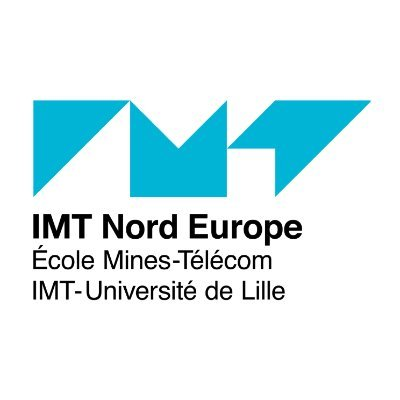

Parlons brièvement de mon parcours scolaire : Après avoir obtenu le bac en 2021, j'ai fait 3 ans de classe préparatoire CPGE 'MPSI/MP'. Durant la deuxième année, j'ai choisi de redoubler afin d'intégrer l'IMT Nord-Europe. Le programme que je suis actuellement s'appelle PIIA pour Programme d'Intégration Ingénieur par Apprentissage. Il s'agit d'un bac+2 qui dure 1 an et qui ouvre vers une alternance de 3 ans à partir de l'année 2025/2026. Ce programme a pour but de remettre à niveau les étudiants manquant d'expérience ou de maturité. J'ai choisi d'intégrer ce programme afin de consolider mon manque d'expérience en informatique afin d'offrir le meilleur à l'entreprise pour l'apprentissage qui suivra.